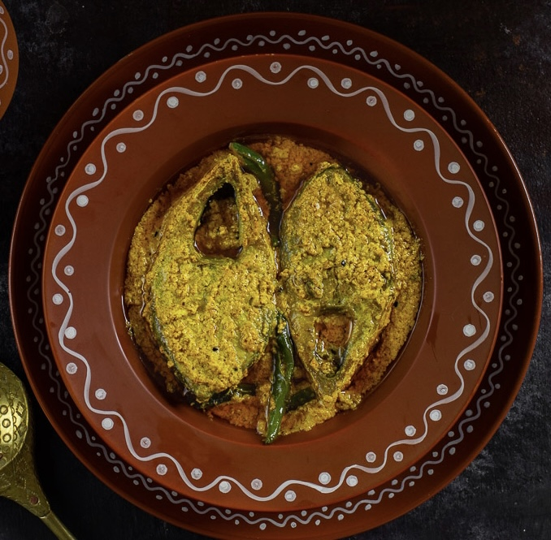

TRADITIONAL BENGALI CUISINE
Shorshe Ilish (Hilsa in Mustard Sauce)
Prep Time15 Minutes

Cook Time10 Minutes
Ingredients
- 7–8 pieces Hilsa fish (Ilish)
- 3 tbsp Mustard seeds
- 1 tbsp Poppy seeds (optional)
- 5–6 Green chilies
- 1 tsp Turmeric powder
- 4 tbsp Mustard oil
- 1 Medium white onion
- Salt to taste
- 1 cup Water
Steps to Cook
- Prepare Mustard Paste: Soak mustard seeds and poppy seeds in water for 10–15 minutes. Blend with 2–3 green chilies, onion and a pinch of salt to make a smooth paste.
- Marinate the Fish: Rub the hilsa pieces with ½ tsp turmeric powder and salt. Let rest for a few minutes.
- Prepare the Cooking Base: In a pan (heat still off) mix mustard paste, remaining turmeric powder, salt,50ml mustard oil, and 1 cup water. Stir until smooth.
- Cook the Fish: Place marinated fish into the mixture. Add remaining green chilies. Cover and cook for 8–10 minutes (medium heat) until fish is cooked and oil floats on top.
- Final Touch: Adjust salt if needed and drizzle a little raw mustard oil before serving.